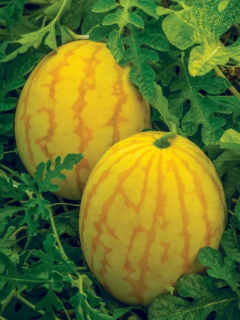

Watermelon is a Nutritious Fruit.

A watermelon is over 90% water and comes in a variety of colors – red, pink, orange, and
yellow. To pick a ripe watermelon, look for a yellow spot on one side and a heavy size. Rinse under running
water to remove any dirt before cutting. Cut watermelon can keep for up to 5 days in the
refrigerator.Watermelon's high water content, antioxidants, and amino acids may make for a better workout.
It's also high in potassium, a mineral that could cut down on cramps at the gym. You can sip watermelon
juice after you sweat, too. Doing so could help prevent muscle soreness, as long as you don't push yourself
too hard.
Yes, watermelon can be helpful for constipation due to its high water and fiber content.
The high water content helps soften stools and keep the digestive tract hydrated, while the fiber aids in
regulating bowel movements. Watermelon is about 92% water, which is crucial for maintaining proper hydration
in the digestive system. This helps prevent stools from becoming hard and dry, making them easier to pass.
It has a very high water content and provides nutrients like lycopene, citrulline, and
vitamins A and C. Studies suggest that this sweet, red melon may even boost heart health, reduce muscle
soreness, and decrease inflammation, though more research is needed.Acidic Fruits: Avoid combining melons
with highly acidic fruits like oranges, lemons, or grapefruits, as this may cause digestive upset or acid
reflux in some individuals. Carbonated Drinks: Carbonated beverages can cause bloating and discomfort when
combined with melons due to the gas they produce in the stomach.
Yellow Watermelon
Yellow watermelons are a naturally occurring variety of watermelon with vibrant yellow
flesh, distinct from the more common red-fleshed type. They have a long history, with evidence suggesting
they predate red watermelons and were cultivated in Africa thousands of years ago. Despite the color
difference, they share a similar exterior appearance with red watermelons, having a green rind with darker
stripes.
Yellow watermelon, which is bright and full of nutrients, makes for an excellent snack
because a cup only has 46 calories. It's healthy for your immune system and your skin because it contains
lots of vitamins A and C.It's as natural as a red watermelon! While you may be more familiar with the
latter, yellow watermelon were actually cultivated first and have grown in Africa for almost 5,000 years. As
with much of our fruit today, farmers selectively bred the melon to develop its color, texture, and flavor.
A naturally occurring variety of watermelon with vibrant yellow flesh.

The vines are short and compact, and the three-pound fruits mature from pale green to
smooth golden yellow when perfectly ripe. The salmon-pink flesh is juicy, sweet and delicious!The price of
such melons is slightly higher than for ordinary watermelons. This is due to the rarity of the species and
the relatively low volume of cultivation in the regions of the country. Today, yellow watermelon grown in
Uzbekistan is supplied both to the domestic market and for export.
During the growing season, it's important to provide your watermelon with ample water, as
the plant has high water requirements. If you've overwatered or underwatered, you may notice stunted growth,
wilted leaves, and an overall unhappy-looking plant.The yellow watermelon is a natural mutation. In fact,
the origin of the common red-fleshed variety comes from Africa. It's heirloom is actually yellow or
white-fleshed and has a sweeter, honey-like flavor with the same nutritional benefits.
The Japanese fruit densuke is well-known for being the most costly watermelon.
Plant yellow watermelons by seed in spring when the soil has warmed. Depending on the
variety, it takes between 70 and 100 days to grow produce to harvesting maturity.Yellow watermelon seeds are
also edible and can be roasted, sprinkled in olive oil, salt, cinnamon, sugar, or a mixture of lime juice
and chili powder.
NUTRIENTS
According to the research,the internet crashed of watermelon.
Yellow Petite Watermelon (80 Days) The Yellow Petite Watermelon is a very aromatic melon,
and just the right size to fit in the refrigerator. Melons are nearly a perfect sphere, 5 to 7 pounds with
bright yellow flesh and a dark and light green striped rind. Very sweet - lots of fun.
To successfully plant watermelon seeds, start by selecting a sunny spot with well-drained
soil. Watermelons need plenty of space to grow, so plant seeds 3-5 feet apart. You can start seeds indoors
about six weeks before the last frost in peat pots near sunlight, keeping the soil moist. When
transplanting, ensure the soil is warm enough, ideally around 65°F (18°C). Amend the soil with compost or
aged manure and consider using black plastic mulch to warm the soil and speed up germination.
Red watermelon is a variety of watermelon with red-colored flesh. It's popular for its
sweet taste and high water content. The red color is due to the presence of lycopene, an antioxidant also
found in tomatoes. Red watermelons are a good source of vitamins A and C, and potassium.Studies show it may
help curb your risk of cancer and diabetes as part of a healthy lifestyle. Watermelon has more of this
nutrient than any other fruit or veggie -- even tomatoes. To load up on lycopene, choose a melon with bright
red flesh rather than yellow or orange.>
Watermelon like many fruits does contain sugar (about 10 grams per whole cup, diced).
However, it is a naturally occurring sugar and is accompanied by other nutritious components (think water,
fiber, vitamins), found in the fruit.Nutritionally yellow watermelon is a great snack with only 46 calories
per cup. It is high in vitamins A and C, making it good for your immune system and skin health. Yellow
watermelon contains more of the antioxidant beta-carotene than red watermelon. Beta-carotene is thought to
protect against cancer and eye disease.
All
Sweetness of watermelon
Watermelon like many fruits does contain sugar (about 10 grams per whole cup, diced).
However, it is a naturally occurring sugar and is accompanied by other nutritious components (think water,
fiber, vitamins), found in the fruit.
yellow watermelon is a great snack with only 46 calories per cup. It is high in vitamins A
and C, making it good for your immune system and skin health. Yellow watermelon contains more of the
antioxidant beta-carotene than red watermelon. Beta-carotene is thought to protect against cancer and eye
disease.
Yellow watermelon, which is bright and full of nutrients, makes for an excellent snack
because a cup only has 46 calories. It's healthy for your immune system and your skin because it contains
lots of vitamins A and C. The beta-carotene antioxidant is more concentrated in yellow watermelon than in
its red counterpart.
THE WATERMELON IS ONE OF THE HEALTHY FRUIT